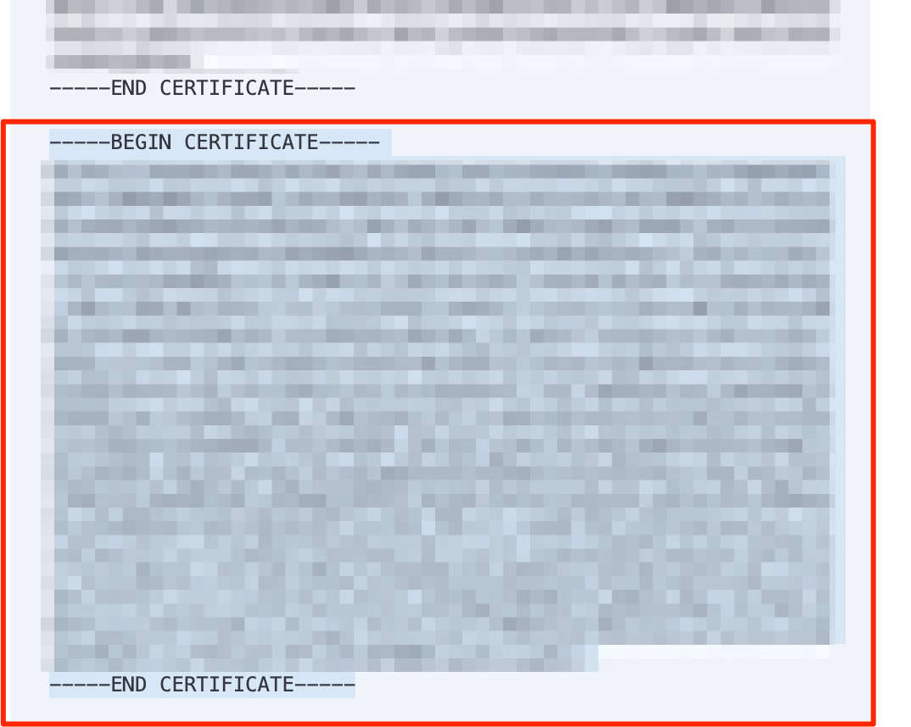
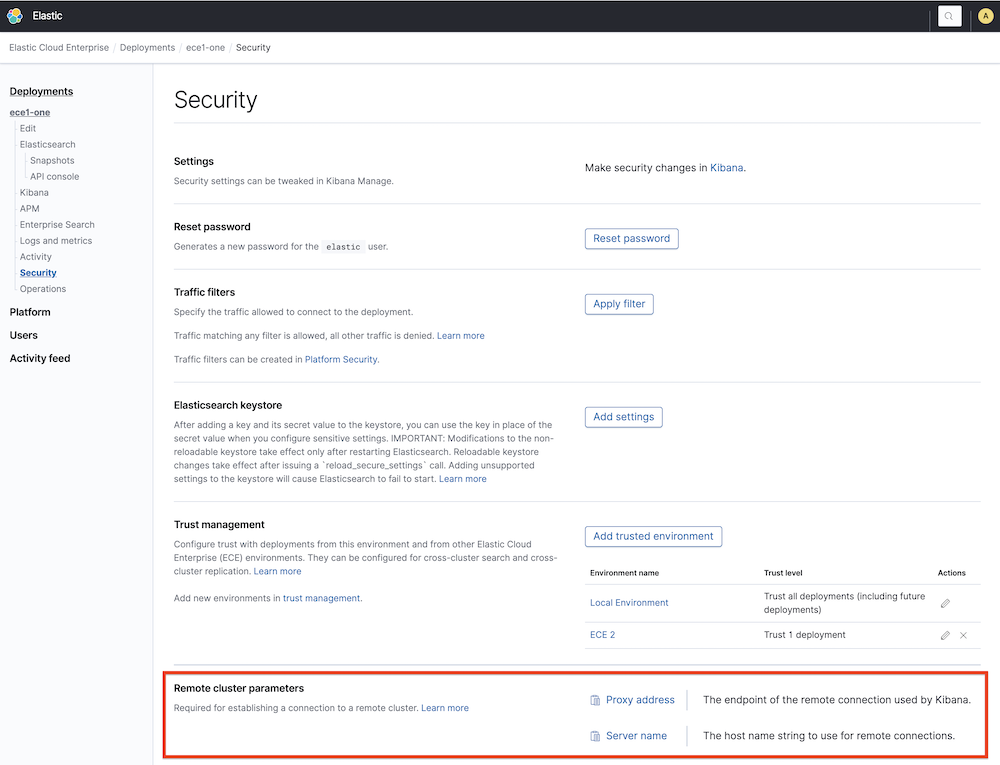

Access deployments of another Elastic Cloud Enterprise environment
editThis section explains how to configure a deployment to connect remotely to clusters belonging to a different Elastic Cloud Enterprise environment.
Allow the remote connection
editBefore you start, consider the security model that you would prefer to use for authenticating remote connections between clusters, and follow the corresponding steps.
- API key
- [beta] This functionality is in beta and is subject to change. The design and code is less mature than official GA features and is being provided as-is with no warranties. Beta features are not subject to the support SLA of official GA features. For deployments based on Elastic Stack version 8.10 or later, you can use an API key to authenticate and authorize cross-cluster operations to a remote cluster. This model offers administrators of both the local and the remote deployment fine-grained access controls.
- TLS certificate
- This model uses mutual TLS authentication for cross-cluster operations. User authentication is performed on the local cluster and a user’s role names are passed to the remote cluster. A superuser on the local deployment gains total read access to the remote deployment, so it is only suitable for deployments that are in the same security domain.
Configuring platform level trust
editIn order to configure remote clusters in other ECE environments, you first need to establish a bi-directional trust relationship between both ECE environment’s platform:
- Download the certificate and copy the environment ID from your first ECE environment under Platform > Trust Management > Trust parameters.
- Create a new trust relationship in the other ECE environment under Platform > Trust Management > Trusted environments using the certificate and environment ID from the previous step.
- Download the certificate and copy the environment ID from your second ECE environment and create a new trust relationship with those in the first ECE environment.
Now, deployments in those environments will be able to configure trust with deployments in the other environment. Trust must always be bi-directional (local cluster must trust remote cluster and vice versa) and it can be configured in each deployment’s security settings.
Configuring trust with clusters of an Elastic Cloud Enterprise environment
edit- Access the Security page of the deployment you want to use for cross-cluster operations.
- Select Remote Connections > Add trusted environment and choose Elastic Cloud Enterprise. Then click Next.
- Select Certificates as authentication mechanism and click Next.
- From the dropdown, select one of the environments configured in Configuring platform level trust.
-
Choose one of following options to configure the level of trust with the ECE environment:
- All deployments - This deployment trusts all deployments in the ECE environment, including new deployments when they are created.
-
Specific deployments - Specify which of the existing deployments you want to trust in the ECE environment. The full Elasticsearch cluster ID must be entered for each remote cluster. The Elasticsearch
Cluster IDcan be found in the deployment overview page under Applications.
- Select Create trust to complete the configuration.
- Configure the corresponding deployments of the ECE environment to trust this deployment. You will only be able to connect 2 deployments successfully when both of them trust each other.
Note that the environment ID and cluster IDs must be entered fully and correctly. For security reasons, no verification of the IDs is possible. If cross-environment trust does not appear to be working, double-checking the IDs is a good place to start.
Using the API
You can update a deployment using the appropriate trust settings for the elasticsearch payload.
Establishing the trust between the two Elastic Cloud Enterprise environments can be done using the trust relationships API. For example, the list of trusted environments can be obtained calling the list trust relationships endpoint:
curl -k -X GET -H "Authorization: ApiKey $ECE_API_KEY" https://COORDINATOR_HOST:12443//api/v1/regions/ece-region/platform/configuration/trust-relationships?include_certificate=false
For each remote ECE environment, it will return something like this:
{
"id":"83a7b03f2a4343fe99f09bd27ca3d9ec",
"name":"ECE2",
"trust_by_default":false,
"account_ids":[
"651598b101e54ccab1bfdcd8b6e3b8be"
],
"local":false,
"last_modified":"2022-01-9T14:33:20.465Z"
}
In order to trust a deployment with cluster id cf659f7fe6164d9691b284ae36811be1 (NOTE: use the Elasticsearch cluster ID, not the deployment ID) in this environment named ECE2, you need to update the trust settings with an external trust relationship like this:
{
"trust":{
"accounts":[
{
"account_id":"ec38dd0aa45f4a69909ca5c81c27138a",
"trust_all":true
}
],
"external":[
{
"trust_relationship_id":"83a7b03f2a4343fe99f09bd27ca3d9ec",
"trust_all":false,
"trust_allowlist":[
"cf659f7fe6164d9691b284ae36811be1"
]
}
]
}
}
This functionality is in beta and is subject to change. The design and code is less mature than official GA features and is being provided as-is with no warranties. Beta features are not subject to the support SLA of official GA features.
API key authentication enables a local cluster to authenticate itself with a remote cluster via a cross-cluster API key. The API key needs to be created by an administrator of the remote cluster. The local cluster is configured to provide this API key on each request to the remote cluster. The remote cluster verifies the API key and grants access, based on the API key’s privileges.
All cross-cluster requests from the local cluster are bound by the API key’s
privileges, regardless of local users associated with the requests. For example,
if the API key only allows read access to my-index on the remote cluster, even
a superuser from the local cluster is limited by this constraint. This mechanism
enables the remote cluster’s administrator to have full control over who can
access what data with cross-cluster search and/or cross-cluster replication. The
remote cluster’s administrator can be confident that no access is possible
beyond what is explicitly assigned to the API key.
On the local cluster side, not every local user needs to access every piece of data allowed by the API key. An administrator of the local cluster can further configure additional permission constraints on local users so each user only gets access to the necessary remote data. Note it is only possible to further reduce the permissions allowed by the API key for individual local users. It is impossible to increase the permissions to go beyond what is allowed by the API key.
If you run into any issues, refer to Troubleshooting.
Prerequisites and limitations
edit- The local and remote deployments must be on version 8.12 or later.
Create a cross-cluster API key on the remote deployment
edit- On the deployment you will use as remote, use the Elasticsearch API or Kibana to create a cross-cluster API key. Configure it with access to the indices you want to use for cross-cluster search or cross-cluster replication.
-
Copy the encoded key (
encodedin the response) to a safe location. You will need it in the next step.
Configure the local deployment
editThe API key created previously will be used by the local deployment to authenticate with the corresponding set of permissions to the remote deployment. For that, you need to add the API key to the local deployment’s keystore.
The steps to follow depend on whether the Certificate Authority (CA) of the remote ECE environment’s proxy or load balancing infrastructure is public or private.
The CA is public
Details
- Log into the Cloud UI.
-
On the deployments page, select your deployment.
Narrow the list by name, ID, or choose from several other filters. To further define the list, use a combination of filters.
- From the deployment menu, select Security.
-
Locate Remote connections and select Add an API key.
-
Add a setting:
- For the Setting name, enter the the alias of your choice. You will use this alias to connect to the remote cluster later. It must be lowercase and only contain letters, numbers, dashes and underscores.
- For the Secret, paste the encoded cross-cluster API key.
- Click Add to save the API key to the keystore.
-
-
Restart the local deployment to reload the keystore with its new setting. To do that, go to the deployment’s main page (named after your deployment’s name), locate the Actions menu, and select Restart Elasticsearch.
If the local deployment runs on version 8.13 or greater, you no longer need to perform this step because the keystore is reloaded automatically with the new API keys.
If you later need to update the remote connection with different permissions, you can replace the API key as detailed in Update the access level of a remote cluster connection relying on a cross-cluster API key.
The CA is private
Details
- Log into the Cloud UI.
-
On the deployments page, select your deployment.
Narrow the list by name, ID, or choose from several other filters. To further define the list, use a combination of filters.
- Access the Security page of the deployment.
- Select Remote Connections > Add trusted environment and choose Elastic Cloud Enterprise. Then click Next.
- Select API keys as authentication mechanism and click Next.
-
Add a the API key:
-
Fill both fields.
- For the Setting name, enter the the alias of your choice. You will use this alias to connect to the remote cluster later. It must be lowercase and only contain letters, numbers, dashes and underscores.
- For the Secret, paste the encoded cross-cluster API key.
- Click Add to save the API key to the keystore.
- Repeat these steps for each API key you want to add. For example, if you want to use several deployments of the remote environment for CCR or CCS.
-
-
Add the CA certificate of the private proxy or load balancing infrastructure of the remote environment. To find this certificate:
- In the remote Elastic Cloud Enterprise environment, go to Platform > Settings > TLS certificates.
- Select Show certificate chain under Proxy.
- Click Copy root certificate and paste it into a new file. The root certificate is the last certificate shown in the chain.
-
Save that file as
.crt. It is now ready to be uploaded.
- Provide a name for the trusted environment. That name will appear in the trust summary of your deployment’s Security page.
- Select Create trust to complete the configuration.
-
Restart the local deployment to reload the keystore with its new setting. To do that, go to the deployment’s main page (named after your deployment’s name), locate the Actions menu, and select Restart Elasticsearch.
If the local deployment runs on version 8.13 or greater, you no longer need to perform this step because the keystore is reloaded automatically with the new API keys.
If you later need to update the remote connection with different permissions, you can replace the API key as detailed in Update the access level of a remote cluster connection relying on a cross-cluster API key.
You can now connect remotely to the trusted clusters.
Connect to the remote cluster
editOn the local cluster, add the remote cluster using Kibana or the Elasticsearch API.
Using Kibana
edit- Open the Kibana main menu, and select Stack Management > Data > Remote Clusters > Add a remote cluster.
- Enable Manually enter proxy address and server name.
-
Fill in the following fields:
- Name: This cluster alias is a unique identifier that represents the connection to the remote cluster and is used to distinguish between local and remote indices.
-
Proxy address: This value can be found on the Security page of the Elastic Cloud Enterprise deployment you want to use as a remote.
If you’re using API keys as security model, change the port into
9443. -
Server name: This value can be found on the Security page of the Elastic Cloud Enterprise deployment you want to use as a remote.
If you’re having issues establishing the connection and the remote cluster is part of an Elastic Cloud Enterprise environment with a private certificate, make sure that the proxy address and server name match with the the certificate information. For more information, refer to Administering endpoints in Elastic Cloud Enterprise.
- Click Next.
- Click Add remote cluster (you have already established trust in a previous step).
This configuration of remote clusters uses the Proxy mode and it requires that the allocators can communicate via http with the proxies.
Using the Elasticsearch API
editTo configure a deployment as a remote cluster, use the cluster update settings API. Configure the following fields:
-
mode:proxy -
proxy_address: This value can be found on the Security page of the Elastic Cloud Enterprise deployment you want to use as a remote. Also, using the API, this value can be obtained from the Elasticsearch resource info, concatenating the fieldmetadata.endpointand port9300using a semicolon.
If you’re using API keys as security model, change the port into 9443.
-
server_name: This value can be found on the Security page of the Elastic Cloud Enterprise deployment you want to use as a remote. Also, using the API, this can be obtained from the Elasticsearch resource info fieldmetadata.endpoint.
This is an example of the API call to _cluster/settings:
PUT /_cluster/settings
{
"persistent": {
"cluster": {
"remote": {
"alias-for-my-remote-cluster": {
"mode":"proxy",
"proxy_address": "a542184a7a7d45b88b83f95392f450ab.192.168.44.10.ip.es.io:9300",
"server_name": "a542184a7a7d45b88b83f95392f450ab.192.168.44.10.ip.es.io"
}
}
}
}
}
Stack Version above 6.7.0 and below 7.6.0
This section only applies if you’re using TLS certificates as cross-cluster security model.
When the cluster to be configured as a remote is above 6.7.0 and below 7.6.0, the remote cluster must be configured using the sniff mode with the proxy field. For each remote cluster you need to pass the following fields:
-
Proxy: This value can be found on the Security page of the deployment you want to use as a remote under the name
Proxy Address. Also, using the API, this can be obtained from the elasticsearch resource info, concatenating the fieldsmetadata.endpointandmetadata.ports.transport_passthroughusing a semicolon. -
Seeds: This field is an array that must contain only one value, which is the
server namethat can be found on the Security page of the ECE deployment you want to use as a remote concatenated with:1. Also, using the API, this can be obtained from the Elasticsearch resource info, concatenating the fieldsmetadata.endpointand1with a semicolon. - Mode: sniff (or empty, since sniff is the default value)
This is an example of the API call to _cluster/settings:
{
"persistent": {
"cluster": {
"remote": {
"my-remote-cluster-1": {
"seeds": [
"a542184a7a7d45b88b83f95392f450ab.192.168.44.10.ip.es.io:1"
],
"proxy": "a542184a7a7d45b88b83f95392f450ab.192.168.44.10.ip.es.io:9400"
}
}
}
}
}
Using the Elastic Cloud Enterprise RESTful API
editThis section only applies if you’re using TLS certificates as cross-cluster security model and when both clusters belong to the same ECE environment (for other scenarios, the Elasticsearch API should be used instead):
curl -k -H 'Content-Type: application/json' -X PUT -H "Authorization: ApiKey $ECE_API_KEY" https://COORDINATOR_HOST:12443/api/v1/deployments/$DEPLOYMENT_ID/elasticsearch/$REF_ID/remote-clusters -d '
{
"resources" : [
{
"deployment_id": "$DEPLOYMENT_ID_REMOTE",
"elasticsearch_ref_id": "$REF_ID_REMOTE",
"alias": "alias-your-remote",
"skip_unavailable" : true
}
]
}'
-
DEPLOYMENT_ID_REMOTE - The ID of your remote deployment, as shown in the Cloud UI or obtained through the API.
-
REF_ID_REMOTE - The unique ID of the Elasticsearch resources inside your remote deployment (you can obtain these values through the API).
Note the following when using the Elastic Cloud Enterprise RESTful API:
- A cluster alias must contain only letters, numbers, dashes (-), or underscores (_).
- To learn about skipping disconnected clusters, refer to the Elasticsearch documentation.
-
When remote clusters are already configured for a deployment, the
PUTrequest replaces the existing configuration with the new configuration passed. Passing an empty array of resources will remove all remote clusters.
The following API request retrieves the remote clusters configuration:
curl -k -X GET -H "Authorization: ApiKey $ECE_API_KEY" https://COORDINATOR_HOST:12443/api/v1/deployments/$DEPLOYMENT_ID/elasticsearch/$REF_ID/remote-clusters
The response includes just the remote clusters from the same ECE environment. In order to obtain the whole list of remote clusters, use Kibana or the Elasticsearch API Elasticsearch API directly.
Configure roles and users
editTo use a remote cluster for cross-cluster replication or cross-cluster search, you need to create user roles with remote indices privileges on the local cluster. Refer to Configure roles and users.